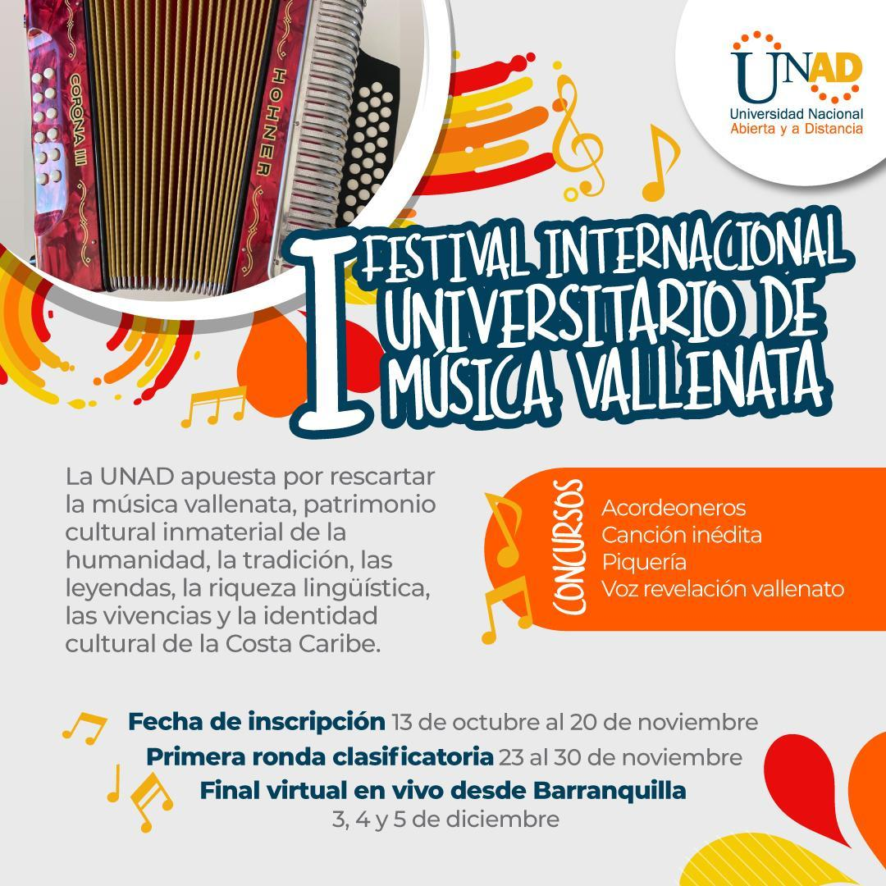
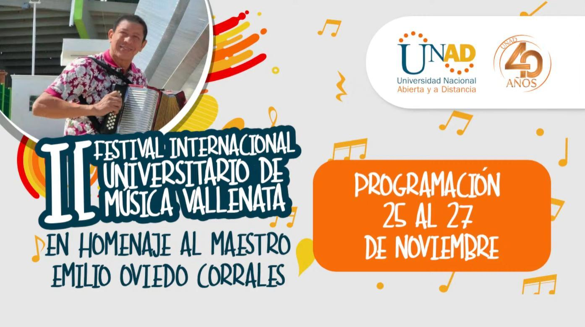
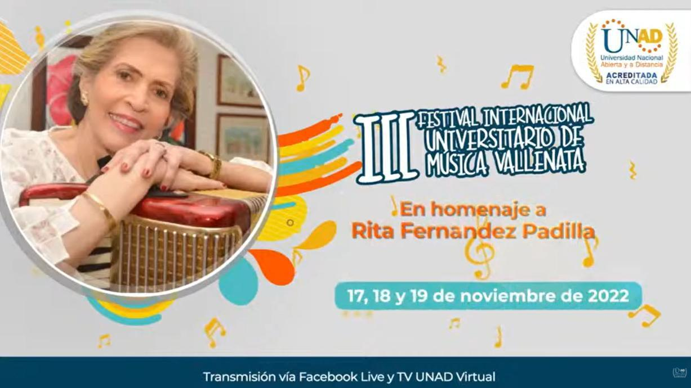
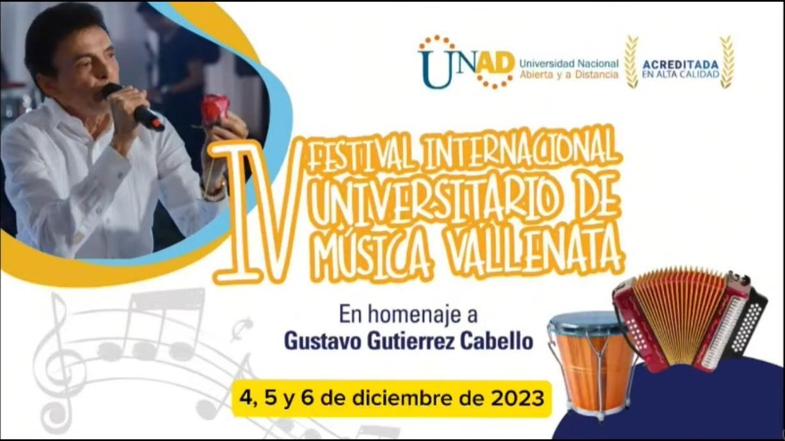
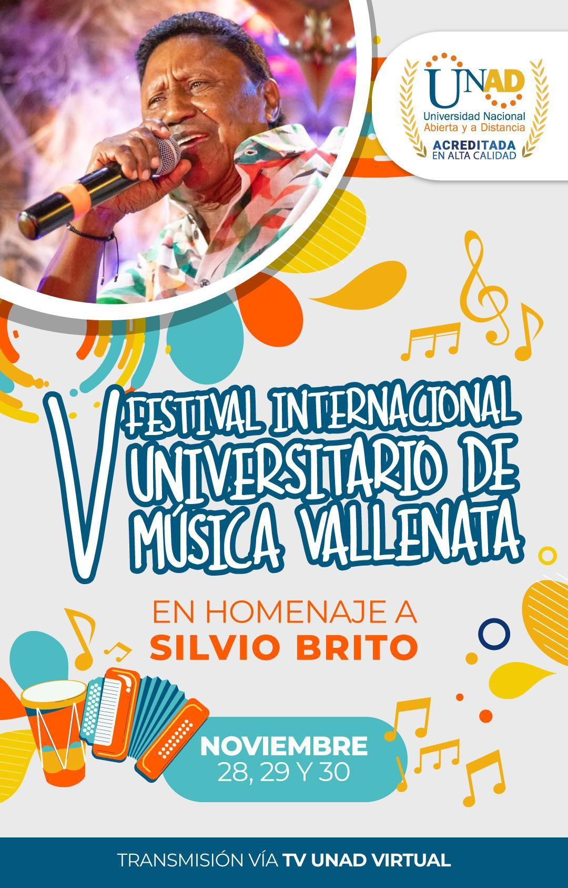
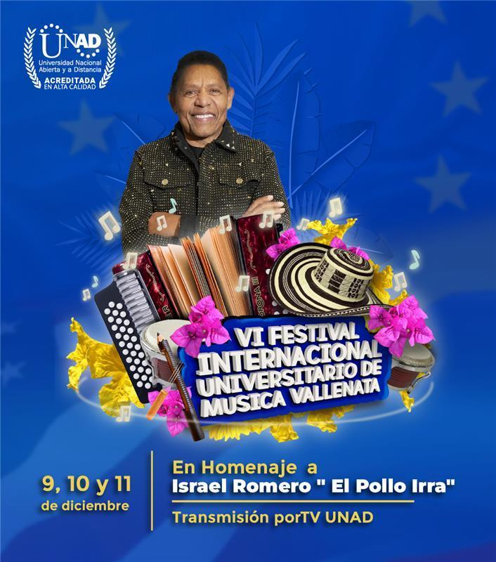

El juglar
El juglar
La voz del pueblo
Tomás Alfonso “Poncho” Zuleta
El Pulmón de Oro: una voz poderosa, un estilo inconfundible y un legado que sigue pasando de generación en generación.
Tres días para celebrar el acordeón, la caja, la guacharaca y la memoria viva del Caribe. Esta edición rinde homenaje a dos leyendas: Poncho Zuleta y el Cocha Molina.
Estudiantes, docentes y egresados compiten y comparten tarima en acordeón, canción inédita y piquería.
Talleres y conversatorios sobre la historia, los juglares y el legado del vallenato.
La voz inconfundible de Poncho Zuleta y el virtuosismo del acordeón de Cocha Molina protagonizan esta edición.
Celebramos la unión entre una voz que es historia y un acordeón que se volvió leyenda.
El juglar
El Pulmón de Oro: una voz poderosa, un estilo inconfundible y un legado que sigue pasando de generación en generación.
 El rey del acordeón
El rey del acordeón
Rey de Reyes y virtuoso del acordeón, reconocido por convertir cada nota en emoción y acompañar grandes páginas del vallenato.
Imágenes enlazadas a sus publicaciones de origen. Los créditos y derechos corresponden a sus respectivos autores y medios.
Agenda académica, cultural y artística del VII Festival Internacional Universitario de Música Vallenata – UNAD. Las actividades presenciales se desarrollan en el CEAD Valledupar, con transmisión por Facebook Live y TV UNAD Virtual cuando se indica.
8:00 a. m. · Papel de la mujer en la cultura vallenata.
CEAD Valledupar · Transmisión vía Facebook Live y TV UNAD Virtual.Registro de asistentes y participantes.
CEAD Valledupar.Himnos de la República de Colombia y de la Universidad Nacional Abierta y a Distancia – UNAD.
Palabra de apertura: Dra. Mardelia Padilla Santamaría, directora UNAD Zona Caribe; Dr. Einar Iván Monroy Gutiérrez, decano ECSAH; Dr. Edgar Guillermo Rodríguez, Vicerrectoría de Servicios a Aspirantes, Estudiantes y Egresados; y Dr. Jaime Alberto Leal, rector UNAD.
CEAD Valledupar · Transmisión vía Facebook Live y TV UNAD Virtual.Maestros Tomás Alfonso “Poncho” Zuleta Díaz y Gonzalo Arturo “El Cocha” Molina.
Presentan: Iván Ochoa y Aurora Durán.
Participan: Gustavo Gutiérrez, Julieth Peraza, José Molina Daza, Ramón Martínez y Álvaro Morón.
CEAD Valledupar · Transmisión vía Facebook Live y TV UNAD Virtual.Presentan: Rodrigo Rosado e Iván Ochoa.
CEAD Valledupar · Transmisión vía Facebook Live y TV UNAD Virtual.Presenta: Carlos Liñán Pitre.
Moderadora: Martha Viviana Vargas, vicerrectora de Inclusión Social para el Desarrollo Regional y la Proyección Comunitaria.
Participan: Carlos Arturo Russo Alfaro, Kandymaku Busintaca, Roger Bermúdez Villamizar y Antonio Giménez Fréite.
CEAD Valledupar · Transmisión vía Facebook Live y TV UNAD Virtual.Presentan: Rodrigo Rosado e Iván Ochoa.
Categorías: Canción Inédita, Voz Revelación, Acordeonero y Piqueria.
CEAD Valledupar · Transmisión vía Facebook Live y TV UNAD Virtual.Presentan: Rodrigo Rosado e Iván Ochoa.
Acordeoneros, Canción Inédita, Voz Revelación y Piqueria.
CEAD Valledupar · Transmisión vía Facebook Live y TV UNAD Virtual.Presentan: Rodrigo Rosado e Iván Ochoa.
Piquería, Acordeoneros, Canción Inédita y Voz Revelación.
CEAD Valledupar · Transmisión vía Facebook Live y TV UNAD Virtual.Presenta: Angélica Vides Daza.
CEAD Valledupar · Transmisión vía Facebook Live y TV UNAD Virtual.Presentan: Aurora Durán e Iván Ochoa.
Condecoración “Vida y Obra Musical”: Everardo Armenta Alonso (compositor), Hildmaro Bolaño (acordeonero), Germán Alfredo Calderón (guacharaquero), Álvaro Molina Silva (corista) y Jorge Vizcaíno (fortalecimiento y promoción al folclor vallenato).
Entregan: Dr. Edgar Guillermo Rodríguez y Dra. Mardelia Yolima Padilla Santamaría.
CEAD Valledupar · Transmisión vía Facebook Live y TV UNAD Virtual.Tomás Alfonso “Poncho” Zuleta Díaz y Gonzalo Arturo “El Cocha” Molina.
Entregan: Dr. Edgar Guillermo Rodríguez y Dra. Mardelia Yolima Padilla Santamaría.
CEAD Valledupar · Transmisión vía Facebook Live y TV UNAD Virtual.Entregan: Dr. Edgar Guillermo Rodríguez y Dra. Mardelia Yolima Padilla Santamaría.
Categorías: Acordeonero, Canción Inédita, Voz Revelación, Piqueria y Pilonera.
CEAD Valledupar · Transmisión vía Facebook Live y TV UNAD Virtual.Programación transcrita de la agenda oficial del festival. Los horarios de las actividades del 19 de noviembre al mediodía se presentan en formato de 12 horas para facilitar su lectura.
Acordeones, tarimas y maestros que mantienen viva la tradición. Selecciona una fotografía para consultar su publicación de origen.
Recorre las ediciones que han celebrado el acordeón, las voces y las raíces del vallenato en la UNAD. Desliza horizontalmente para avanzar por la galería.

La primera edición: música y tradición desde la academia.
Consultar fuente oficial ↗
Una edición más en el recorrido de la música vallenata universitaria.
Información y enlace oficial por incorporar
Homenaje a Rita Fernández Padilla.
Consultar fuente oficial ↗
Una edición del festival que reúne música, cultura y comunidad universitaria.
Información y enlace oficial por incorporar
Edición dedicada al reconocimiento de Silvio Brito.
Ver edición ↗
Edición dedicada al homenaje a El Pollo Irra.
Ver edición ↗Homenaje a Poncho Zuleta y Cocha Molina. Del 17 al 19 de noviembre de 2026.
Explorar la edición actual ↗Las fotografías corresponden a material publicado por la UNAD y el sitio oficial del festival. En las ediciones donde no se encontró una imagen verificable, se muestra el nombre de la edición.
Estudiantes activos y egresados de instituciones de educación superior colombianas.
No, la inscripción es completamente gratuita.
CEAD Valledupar · Modalidad híbrida con transmisión por TV UNAD Virtual · 17 al 19 de noviembre de 2026.
Estamos preparando este espacio para compartir más información, contenidos y novedades del Festival Internacional Universitario de Música Vallenata.
Volver al inicio